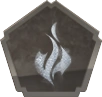
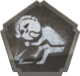
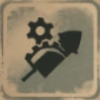
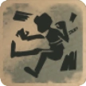
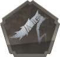
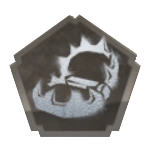
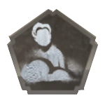

Hunter Deductions
Hell Ember
Character Introduction
"I WILL FIND YOU" — Leo Beck
Special Attribute
Infernal Soul
Lucky Guy relies heavily on luck. Yet Lady Luck may not always be by his side.
Leo accumulates fury for Infernal Soul for each free moving survivor decoding a cipher, after receiving abnormal status or when in pursuit
Description
Tap the skill button to awaken Phantoms for 25 seconds. Hold the skill button to transmit Infernal Soul to Puppets.
Puppets will be immobilized when survivors are dismantling puppets or when puppets hit survivors
| Name | Ability |
|---|---|
| Puppet Control | Leo is connected to his puppets. Due to this, he is able to switch locations with puppets and temporarily gain a movement speed boost, for a short period of time. The puppets can also detect nearby survivors and alert Leo. |
| Multi-Puppet Control | Leo gaines 1 extra puppet. He is able to synchronize attack animation with this puppet also. |
| Phantoms | Phantoms will automatically pursue nearby survivors. Phantoms can also be casted onto puppet to pursue and to locate survivors. |
Smiley Face
Character Introduction
"Thank you, this face is suitable." — Joker
Special Attribute
Rocket Modification
Joker can collect rocket parts around the map to modify his rocket
Joker's rocket parts are scattered all across the map for Rocket Modification
Description
Joker has can modify his rocket in numerous ways. Can instantly equip multiple parts when selecting Rocket Modification or can equip 1 at a time. Modification is lost after an attack or Rocket Dash.
| Name | Ability |
|---|---|
| Wind Wings | Increases Attack Speed by 25% and Rocket Dash Speed by 50%. |
| Drill | Healing time will be increased by 100% when taking normal attacks or abilities |
| Propellor | Grants unlimited Rocket Dash Time speed of rocket dash will be slightly decreased. If rocket dash is interrupted by survivors. Cooldown will be reduced to 6 seconds. |
Gamekeeper
Character Introduction
"You'll get hurt from being too nice." — Bane
Special Attribute
Suffocation
Gamekeeper has the ability to suffocate survivors by his rapid fast collisions against obstacle, which causes shock waves. When hooking towards an object, Bane will be dragged towards it at high speed. When hooking towards survivors, Bane will drag the survivor towards him.
With each successful collision, Bane activates Suffocation
Description
Each shock wave slows nearby survivors interaction and movement speed by 13% and then 20% respectively for 5 seconds. This effect can be stacked up to 3 times. When hit by Chain Hook, survivors location will be revealed to Gamekeeper 2 times within 60 seconds.
| Name | Ability |
|---|---|
| Chain Hook  | When Bane swings his hooks. If it hits a survivor it will hook the survivor towards him. If it hits an obstacle he will pull himself towards the obstacle instead. He can cast this skill again within 8 seconds if he his hook lands. If he misses then this skill immediately goes into cooldown. |
| Trap  | Bane can place traps all around the map. (Max capped: 8, Cannot place trap near a basement or within 20 meters of a Rocket Chair) Survivors who steps on the trap will be immobilized for 8 seconds and will be visible to Bane for 5 seconds. |
| Thorny Chain Hook | When Bane's hook is in impact with a survivor. It deals 50% of a normal attack. |
| Fury Hook | Bane's hook is now unlimited. First 2 cast has to be used within 8 seconds. Then subsequently 3 seconds each. |
Ripper
Character Introduction
"I have begun to fear falling asleep. That is most likely only a joke, but...I wake up to the smell of rust every morning. How can I be free of "him"? — Jack
Special Attribute
Freezing Fog
The fog's chill can be felt on one's bones. Fog blades are created on Ripper's hands when a certain amount of fog has been accumulated.
Accumulates freezing mists to create Fog Blade.
Description
Once every 20 seconds. Ripper gaines a fog blade. Fog blade deals damage equivalent to a normal attack.
| Name | Ability |
|---|---|
| Freezing Fog | Freezing fog deals damage equivalent to a normal attack. If fog blade misses a survivor. It will create fog path for ripper to walk on. Fog path reduces Hidden in mist's cooldown by 75% and increases Ripper's movement speed, slightly. |
| When no interaction or attack has been made. Ripper gradually enters hidden in mist. Increasing his movement speed and becomes one with the fog. | |
| Hidden in Shadows | Ripper will enter Hidden in Mist more quickly. |